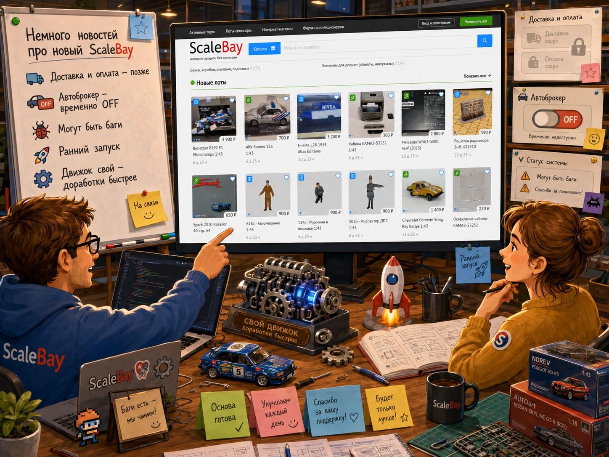

Немного новостей про новый ScaleBay

Друзья, делимся короткими новостями о текущем состоянии нового ScaleBay.
Мы продолжаем готовить обновлённую платформу к запуску и хотим заранее рассказать о нескольких важных моментах. Запуск будет ранним: мы не хотим затягивать процесс и заставлять вас ждать, поэтому часть возможностей появится не сразу, а некоторые вещи на первом этапе могут работать неидеально.
Что изменится на старте
На новом сайте временно не будет отдельной информации о доставке и оплате.
На старой версии сайта такие разделы присутствуют, поскольку используемый движок изначально рассчитан на интеграцию с транспортными компаниями и онлайн-оплату товара. Но эта логика в полной мере работает только в США, поэтому для нашего формата она не даёт нужной пользы.
При этом возможность указать условия доставки, оплаты или любые другие важные детали никуда не исчезает. Продавцы по-прежнему смогут добавить эту информацию вручную в описание лота.
Также на первом этапе будет временно отключён автоброкер.
Мы знаем, что это важная и привычная функция, но сейчас не со всеми ошибками удаётся справиться достаточно быстро. Поэтому мы решили не выпускать её в сыром виде, а вернуться к ней после стабилизации основных механизмов сайта.
Кроме того, честно предупреждаем: что-то где-то может глючить.
Новый ScaleBay запускается на раннем этапе, и мы понимаем, что первое время будут возникать ошибки, недочёты и шероховатости. Для нас важно не скрывать это, а постепенно довести платформу до хорошего состояния уже вместе с пользователями.
Главное — наш собственный движок
Самое важное в этом обновлении - то, что ScaleBay переходит на собственный движок.
Это даёт нам гораздо больше свободы. Ошибки станет проще исправлять, новые возможности - легче добавлять, а развитие платформы больше не будет зависеть от ограничений сторонних решений и чужой логики.
После запуска мы будем активно дорабатывать сайт: улучшать стабильность, исправлять найденные проблемы, возвращать важные функции и постепенно добавлять новые возможности.
Мы будем двигаться поэтапно и внимательно прислушиваться к вашим отзывам. Именно они помогут сделать новый ScaleBay удобнее, надёжнее и ближе к тому формату, который нужен сообществу.